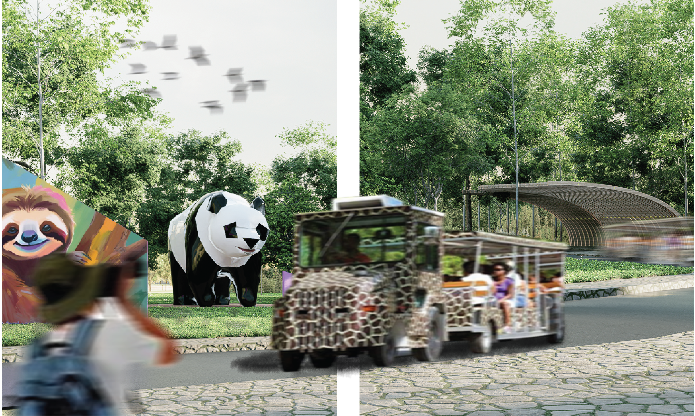

Design is not just what it looks like and feels like.
Design is how it works.
Profile

images/profile.jpg
Chitsanupong Kongkaewkhao (Sand)
I am a 4th-year Landscape Architecture student at Chulalongkorn University, driven by the challenge of transforming complex urban conditions into high-performance, resilient public spaces. My academic and design focus centers on urban development frameworks, brownfield redevelopment, and ecological landscape master planning.
By integrating spatial design with analytical tools, I aim to base design decisions on empirical landscape performance data—mitigating microclimate issues and flooding risks before crafting human-scale spatial experiences.
Higher Education
- Chulalongkorn University
- Faculty of Architecture
- Bachelor of Landscape Architecture (BLA), Year 4
Technical Competencies
Technical Competencies


YOUR STREAM
Samutsakhon, Thailand

CHAINGMAI ZOO
Chiang Mai, Thailand

TARASUPHAWAT (NONGBON LAKE)
Bangkok, Thailand

FRAGILE (MEMORIAL PARK)
Memorial Landscape,Bangkok,Thailand

HOUSE NO 1
Residential Context
Contact & Inquiries
I am currently looking for an internship placement at a landscape architecture firm where I can contribute to forward-thinking ecological planning and refine my spatial design skills.